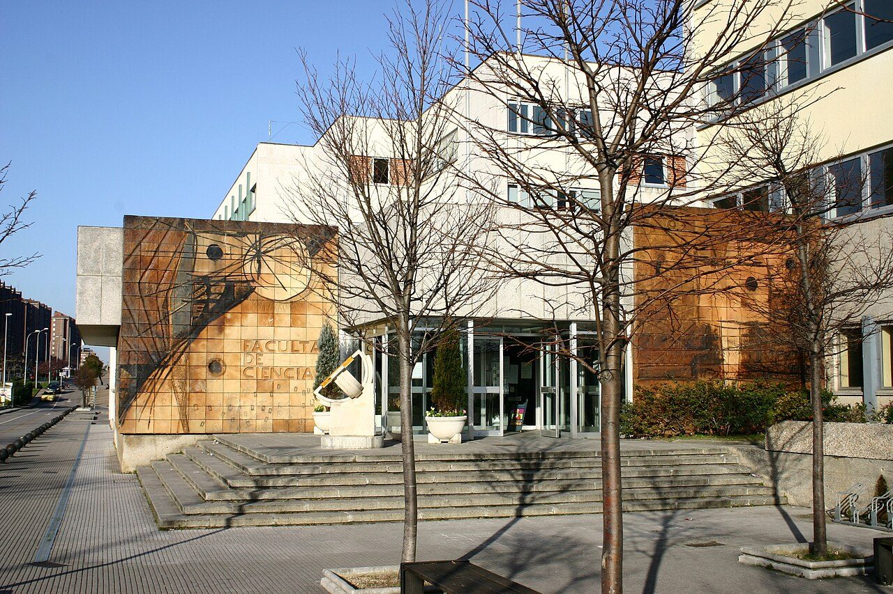

Científicos
Criterios: PC 5.2, PC 1.1
🤔 Pienso5 min
Qué hago aquí: Piensa un momento y contesta con lo que ya sabes. No pasa nada si no lo sabes: es para empezar.
¿Conoces a alguien que trabaje en ciencia? ¿Qué te gustaría investigar a ti?
📖 Leo y aprendo15 min
Qué hago aquí: Lee despacio, mira los dibujos y los ejemplos, y quédate con la idea clave del final.
Cantabria tiene una larga tradición en las ciencias del mar y de la Prehistoria, gracias a su costa y a sus cuevas.

Foto: Josep Panadero · CC BY-SA 3.0 · Santander.Universidad.Facultad.de.Ciencias.jpg
✏️ Hago25 min
Qué hago aquí: Haz las actividades en orden. Empieza siempre por las básicas.
Explica por qué Cantabria tiene tradición en las ciencias del mar y de la Prehistoria. Relaciónalo con su geografía.
Explica qué hizo González de Linares y por qué fundar una estación de biología marina en 1886 fue algo pionero.
Compara a Sautuola y a Alcalde del Río: profesión, época, descubrimientos y cómo trabajaban.
Relaciona cada centro de investigación actual con su campo y con una unidad de este libro: Instituto de Física, IH Cantabria, Valdecilla.
Explica el método científico con un ejemplo de esta unidad o de la unidad 5: observación, pregunta, hipótesis, prueba y conclusión.
Busca una investigación reciente de la Universidad de Cantabria sobre el mar, las costas o el clima. Resume qué estudian, por qué es importante y cita la fuente.
Escribe tres preguntas científicas que podrías investigar sobre el patrimonio natural de tu municipio y cómo empezarías a responder una de ellas.
🚀 Amplío (si quieres saber más)
Qué hago aquí: ¿Has terminado? Lee la curiosidad o elige el reto. Es voluntario.
Visita (o investiga) el Museo Marítimo del Cantábrico. Explica qué secciones tiene, qué relación guarda con la antigua estación de biología marina y elige una pieza para hacer su ficha: qué es, de dónde viene y qué nos enseña.
✅ Compruebo5 min
Qué hago aquí: Contesta sin mirar la ficha y marca cómo lo llevas.